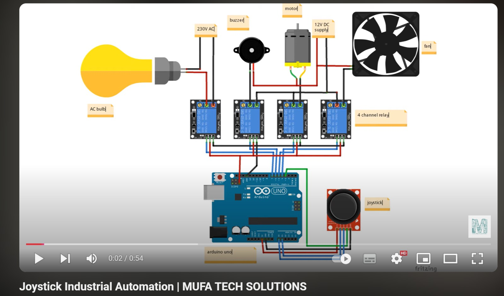

Joystick Controller (EEE)
This project focuses on joystick-controlled automation using an Arduino Nano to operate electrical appliances like a motor, fan, light, and buzzer. It showcases intuitive control and efficient human-machine interaction, ideal for automation and assistive applications.
Java and HTML Projects Loading
More exciting web and Java-based projects are in progress. Stay tuned as I continue building applications that combine logic, design, and interactivity to solve real-world problems!